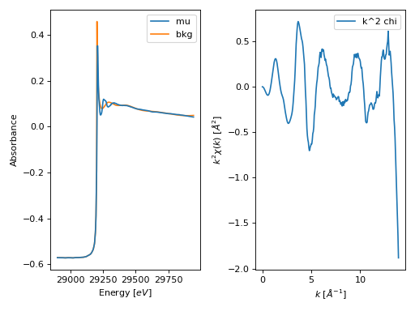

Autobk module¶
-
araucaria.xas.autobk.autobk(group, rbkg=1.0, k_range=[0, inf], kweight=1, win='hanning', dk=0.1, nfft=2048, kstep=0.05, k_std=None, chi_std=None, nclamp=2, clamp_lo=1, clamp_hi=1, update=False)¶ Autobk algorithm to remove background of a XAFS scan.
- Parameters
group (
Group) – Group containing the spectrum for background removal.rbkg (
float) – Distance (Å) for \(\chi(R)\) above which the signal is ignored. The default is 1.0.k_range (
list) – Wavenumber range (\(Å^{-1}\)).The default is [0,inf].kweight (
int) – Exponent for weighting chi(k) by k**kweight. The default is 1.win (
str) – Name of the the FT window type. The default is ‘hanning’.dk (
float) – Tapering parameter for the FT window. The default is 0.1.nfft (
int) – Array size for the FT. The default is 2048.kstep (
float) – Wavenumber step size for the FT (\(Å^{-1}\)). The default is 0.05.k_std (
Optional[ndarray]) – Optional k array for standard \(\chi(k)\).chi_std (
Optional[ndarray]) – Optional array for standard \(\chi(k)\).nclamp (
int) – Number of energy end-points for clamp. The default is 2.clamp_lo (
int) – Weight of low-energy clamp. The default is 1.clamp_hi (
int) – Weight of high-energy clamp. The default is 1.update (
bool) – Indicates if the group should be updated with the autobk attributes. The default is False.
- Return type
- Returns
Dictionary with the following arguments:
bkg: array with background signal \(\mu_0(E)\).chie: array with \(\chi(E)\).chi: array with \(\chi(k)\).k: array with wavenumbers.autobk_pars: dictionary with autobk parameters.
- Raises
TypeError – If
groupis not a valid Group instance.AttributeError – If attribute
e0oredge_stepdoes not exist ingroup.
Warning
rbkgcannot be lower than 2 x \(\pi /(kstep \cdot nfft)\), which corresponds to the grid resolution of \(\chi(R)\).Notes
The Autobk algorithm approximates a XAFS bakground signal by fitting a cubic spline to chi(R) below the
rbkgvalue. This spline is then removed from the original signal.If
update=Truethe contents of the returned dictionary will be included as attributes ofgroup.Example
>>> from araucaria.testdata import get_testpath >>> from araucaria import Group >>> from araucaria.io import read_dnd >>> from araucaria.xas import pre_edge, autobk >>> from araucaria.utils import check_objattrs >>> fpath = get_testpath('dnd_testfile.dat') >>> group = read_dnd(fpath, scan='mu') # extracting mu and mu_ref scans >>> pre = pre_edge(group, update=True) >>> attrs = ['bkg', 'chie', 'chi', 'k', 'autobk_pars'] >>> autbk = autobk(group, update=True) >>> check_objattrs(group, Group, attrs) [True, True, True, True, True]
>>> # plotting original and background spectrum >>> import matplotlib.pyplot as plt >>> from araucaria.plot import fig_xas_template >>> fig, ax = fig_xas_template(panels='xe') >>> line = ax[0].plot(group.energy, group.mu, label='mu') >>> line = ax[0].plot(group.energy, group.bkg, label='bkg', zorder=-1) >>> text = ax[0].set_ylabel('Absorbance') >>> leg = ax[0].legend() >>> line = ax[1].plot(group.k, group.k**2 * group.chi, label='k^2 chi') >>> leg = ax[1].legend() >>> fig.tight_layout() >>> plt.show(block=False)
(Source code, png, hires.png, pdf)

{kind=link}
{kind=link}